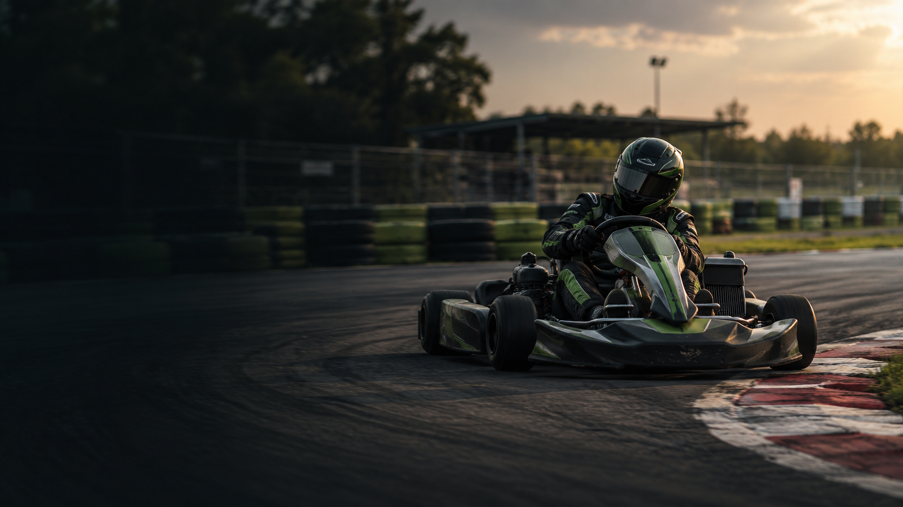

GPS
POSITION SENSOR
GPS / GNSS receiver
Records latitude, longitude and timestamps; some loggers also provide speed and a position-accuracy estimate.
Used for: track mapping · lap timing · distance alignmentTurn GPS and sensor readings into a clearer picture of every session. Compare performance, find where lap time changes, and give drivers evidence to review after the race.

Our first target is trustworthy analysis, not “AI for everything.” The lap delta can be calculated directly. Machine learning comes later, when there is enough clean kart data to test whether it adds value.
Each layer has a clear job. The phone measures; Python organises; analysis compares; the model estimates; the website explains.
Log the time and GPS position during each session. If the logger also records speed and GPS accuracy, keep those fields too. Mount the phone securely and do not interact with it while the kart is moving.
The same circuit, kart, tyre condition, driver and weather can affect lap time. Record what is known; do not invent missing sensor values.
Clean data, detect laps, calculate position along the circuit, align laps and compute elapsed-time differences.
Find the sections where the time gap increases, then investigate those sections with the driver and team.
The hardware section focuses on the sensors and the measurements they provide. The first version can begin with smartphone GPS; additional sensors are optional upgrades.
Records latitude, longitude and timestamps; some loggers also provide speed and a position-accuracy estimate.
Used for: track mapping · lap timing · distance alignmentMeasures acceleration and rotation of the mounted unit, adding context about how the kart moves through a corner.
Used for: motion patterns · lateral/longitudinal movementCollects sensor readings with timestamps and stores or transmits them for later analysis.
Used for: consistent records · sensor data captureOnly included if suitable sensors are available on the kart. Smartphone GPS does not directly measure these inputs.
Used for: richer vehicle behaviour analysisThis is the core position source: it supplies timestamped coordinates for track mapping, lap detection and aligning laps. Start with a phone logger before purchasing dedicated hardware.
Select a sensor card to learn what it measures, what it cannot measure, and when it is worth adding. Start with smartphone GPS and timestamps; upgrade only when the data shows a real limitation.
Separate measured values from values calculated by software and details recorded manually. That distinction helps keep the results honest.
| Field | How we get it | Why it matters | Category |
|---|---|---|---|
| Timestamp | GPS logger | Lap duration and time alignment | Measured |
| Latitude / longitude | GPS logger | Track path and approximate location along the circuit | Measured |
| Speed | Logger-provided or estimated from positions | Compare speed profiles; GPS-derived values may be noisy | Measured / derived |
| GPS accuracy / fix quality | Logger, if exported | Flag unreliable samples and poor sessions | Measured |
| Lap and segment time | Calculated from timestamps and boundaries | Core performance metric and first ML target | Calculated |
| Corner and segment ID | Track map defined by team | Compare the same physical sections across laps | Defined |
| Driver / kart / session ID | Recorded by the team | Separate driver and vehicle differences | Manual context |
| Tyres, surface and weather | Recorded when known | Help explain why two sessions may not be comparable | Manual context |
Kart ID, gearing if applicable, tyre type and condition, pressure if measured, mass/fuel state if relevant, setup changes, and maintenance notes.
Track layout and direction, start/finish line, corner labels, wet/dry surface, track temperature if available, and whether any layout changed.
Driver ID, session date, warm-up status, traffic or interrupted laps, and any safety or data-quality notes. Compare like with like wherever possible.
Do not claim to measure throttle, brake pressure, steering angle, tyre temperature or suspension travel unless a suitable sensor actually measures it. Phone GPS alone cannot provide those signals.
Use the template for your phone logger. The demo file is synthetic and exists only to test the workflow. The OpenF1 link returns real Formula 1 car telemetry—not go-kart data—so keep it as a separate learning reference.
Data integrity: No real kart session was supplied for this website. Do not present the synthetic demo as collected data or F1 telemetry as kart telemetry. Replace both with your own logged CSV when available.
Explore these illustrative graphs. They use simulated values to explain the method and are not measurements from your kart.
Move over the chart or focus it and use the arrow keys to inspect a distance.
Move over the chart or focus it and use the arrow keys to inspect a distance.
Compare the same place on the circuit. A speed difference can reveal a pattern, but GPS noise and sample timing matter—especially on short corners.
Delta = current elapsed time − reference elapsed time. A rising delta means the current lap is falling further behind over that section.
Mark corner entry and exit on the map. The change in time delta across that interval estimates how much time was gained or lost there.
Credibility comes from traceable data, a repeatable method, and honest testing—not from adding AI labels to a graph.
Keep the original CSV unchanged. Record the logger, units, phone or receiver, session date, kart and driver identifiers. Mark each field as measured, calculated or manually recorded.
Verify lap crossings manually, inspect GPS jumps, use the same circuit definition, and align laps at the same track positions before calculating a time delta.
Start with a median-time baseline, then compare Linear Regression and Random Forest. Hold out whole sessions and report Mean Absolute Error (MAE) in seconds.
Features: segment ID, entry speed, previous segment exit speed and known session context. Target: measured segment time. Use only information available at the prediction moment; never feed future corner outcomes into a before-corner prediction.
Current status: this is an educational website with an illustrative chart and an example CSV. It is not yet a validated kart telemetry product. Results become project evidence only after tests using actual recorded sessions.
The tool is meant to guide investigation and learning, not replace driver feedback, engineering judgement or safe testing.
Instead of seeing only a final lap time, see where the gap to a reference lap begins to grow or shrink.
Use the same track positions and segment boundaries each time, and keep session conditions with the data.
Share graphs and specific sections with the driver after the session, then verify observations during a debrief.
Build a record of sessions and compare the effect of known setup or condition changes without assuming causation.
Show a full applied workflow: sensors, data engineering, algorithms, model evaluation, and communication of results.
Add a better GNSS receiver or IMU after identifying which data gaps actually limit the analysis.
Before buying extra hardware or training a model, collect a short session, inspect its data quality, and test whether you can identify valid laps. That tells us what the current setup can—and cannot—measure.
Get the CSV data kit ↗✓ Phone mounted securely
✓ Logger exports CSV
✓ Timestamps and coordinates checked
✓ Track and lap crossing verified
✓ Results labelled as real or illustrative